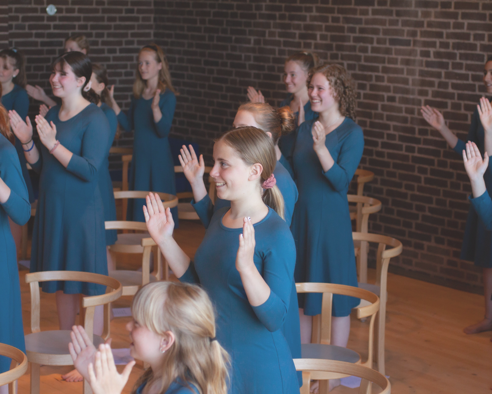
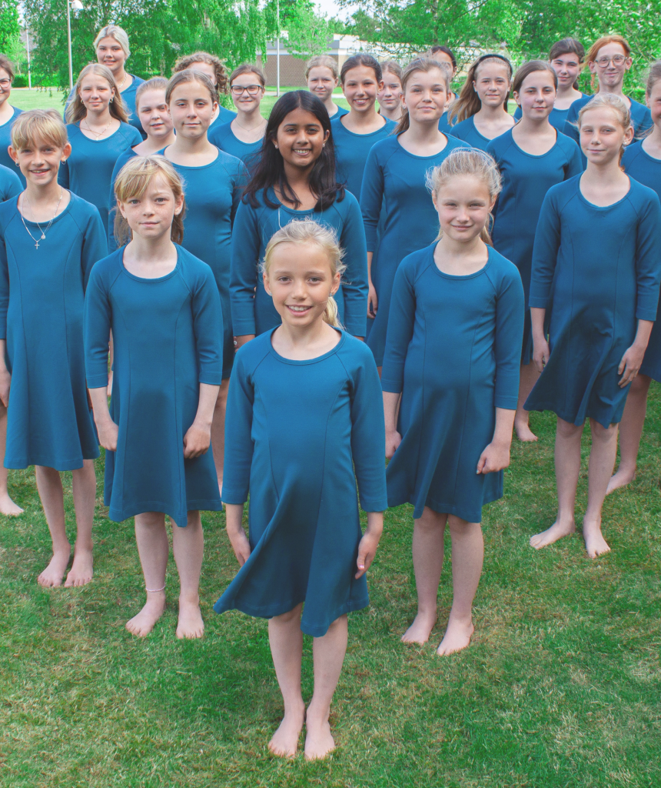

Back
Billund girls’
church choir
church choir
About
Facts
Billund girl’s church choir consists of thirty-eight girls aged from nine to nineteen years. They give
concerts in churches all around the country and at cultural and musical events in Billund
and the surrounding areas.
The girls in the choir have both group
and solo lessons, so that they can develop their musical expression in
the best possible way.
The choir is also the framework for
a strong fellowship among the girls.
and the surrounding areas.
The girls in the choir have both group
and solo lessons, so that they can develop their musical expression in
the best possible way.
The choir is also the framework for
a strong fellowship among the girls.